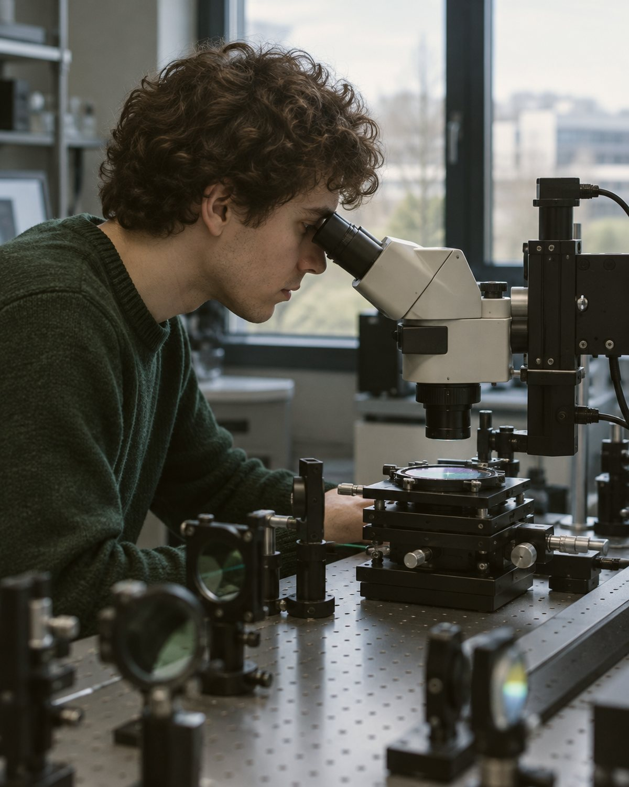
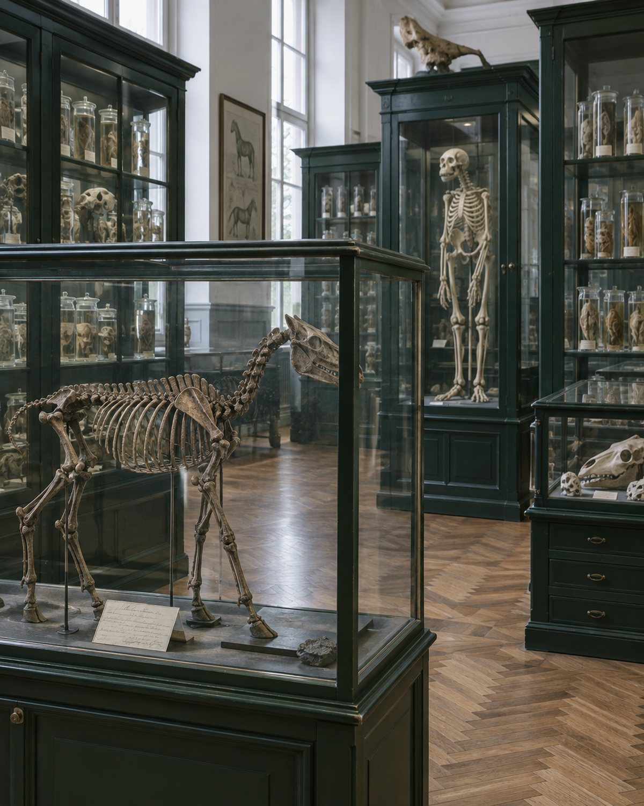
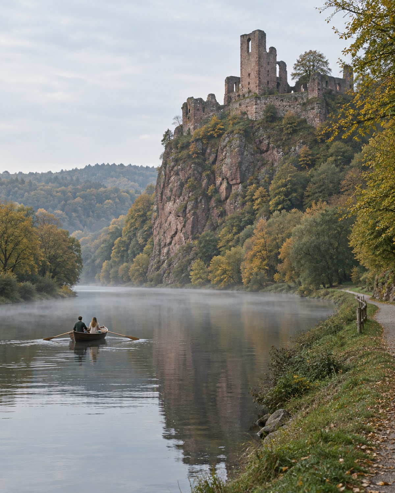

Fakultät I
Theologische Fakultät
Ausgewählte Studiengänge
- Evangelische Theologie
- Evangelische Religion (Lehramt)
Franckeplatz 1, Haus 30
Martin-Luther-Universität Halle-Wittenberg
Mehr als 150 Studiengänge, neun Fakultäten und eine Tradition, die von Wittenberg bis Halle reicht. Willkommen an der größten Universität Sachsen-Anhalts.
Die Martin-Luther-Universität Halle-Wittenberg steht seit über 500 Jahren für Forschung und Lehre auf höchstem Niveau. Sie ist ein Ort, an dem Wissen entsteht, kritisches Denken gefördert und freie Wissenschaft gelebt wird.
Wittenberg 1502Halle 1694Vereint 1817
Chronik
Aus der Wittenberger Leucorea und der Hallenser Friedrichs-Universität ist die größte und traditionsreichste Hochschule Sachsen-Anhalts gewachsen.
1502
Kurfürst Friedrich der Weise gründet in Wittenberg eine Universität. Ihr Name, Leucorea, ist das griechische Wort für den weißen Berg, der der Stadt ihren Namen gab.
1517
Martin Luther, Professor der Theologie an der Leucorea, veröffentlicht seine 95 Thesen. Ein Jahr später kommt Philipp Melanchthon nach Wittenberg. Von hier aus geht die Reformation nach ganz Europa.
1694

In Halle wird eine neue Universität eröffnet. Mit Christian Thomasius, August Hermann Francke und Christian Wolff wird sie zu einem Zentrum der deutschen Aufklärung.
1754

Dorothea Christiane Erxleben wird in Halle als erste Frau in Deutschland zur Doktorin der Medizin promoviert. Heute trägt das Lernzentrum der Medizinischen Fakultät ihren Namen.
1817
Wittenberg und Halle werden zu einer Universität vereint. 1834 erhält sie am Universitätsplatz ihr Hauptgebäude, das Löwengebäude, bis heute das Wahrzeichen der Universität.
2026

Neun Fakultäten, rund 350 Professorinnen und Professoren und ein Exzellenzcluster: Im Center for Chiral Electronics entsteht die Elektronik von morgen.
Studium
Mehr als 150 grundständige und fast 80 weiterführende Studienangebote, geordnet in neun Fakultäten.
Fakultät I
Ausgewählte Studiengänge
Franckeplatz 1, Haus 30
Bewerbung
Stöbern Sie im Studienangebot und lernen Sie die Universität beim Hochschulinfotag, in der Langen Nacht der Wissenschaften oder in Online-Formaten kennen.
OrientierungsangeboteDie Allgemeine Studienberatung und die Fachstudienberatung beantworten Ihre Fragen zu Fächern, Zulassung und Studienorganisation, persönlich oder online.
Zur StudienberatungBewerbung und Einschreibung erfolgen online über das Immatrikulationsamt. Fristen und Unterlagen richten sich nach Ihrem Studiengang.
Jetzt bewerbenDas Welcome-Portal begleitet Sie bei Wohnung, Formalitäten und Ihren ersten Tagen in Halle. Willkommen an der Universität.
Zum Welcome-PortalForschung
TransformationNachhaltigkeitWissenskulturen und Bildung
Exzellenzcluster
Gemeinsam mit Partnern in Regensburg und Berlin untersucht die Universität, wie sich die Händigkeit von Molekülen und Materialien für eine neue, energiesparende Elektronik nutzen lässt.
23.11.2026
Spintronik: Forschende beschreiben neue Art atomarer Schwingung
Studienort
Rund um einen der schönsten Universitätsplätze Europas liegt eine Stadt mit über 1.200 Jahren Geschichte, kurzen Wegen und viel Grün entlang der Saale.
I
Der Markt mit dem Roten Turm und den vier Türmen der Marktkirche ist das Herz der Stadt.

II
Ein barockes Ensemble und Heimat der Theologie und der Erziehungswissenschaften.

III
Über 40 Sammlungen und Museen, darunter die Meckelschen Sammlungen und die Geiseltalsammlung.

IV
Burg Giebichenstein, die Peißnitzinsel und das Ufer: Natur beginnt hier vor der Hörsaaltür.
Weltoffen
Montag, 23. November 2026
Meldung lesen
Ihr Studium
Wählen Sie den nächsten Schritt. Wir begleiten Sie vom ersten Gedanken bis zur Einschreibung.